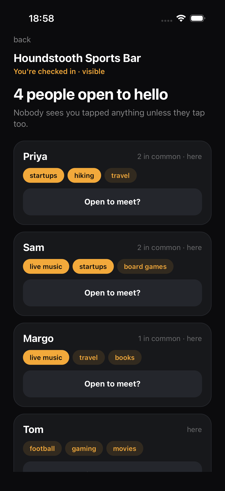
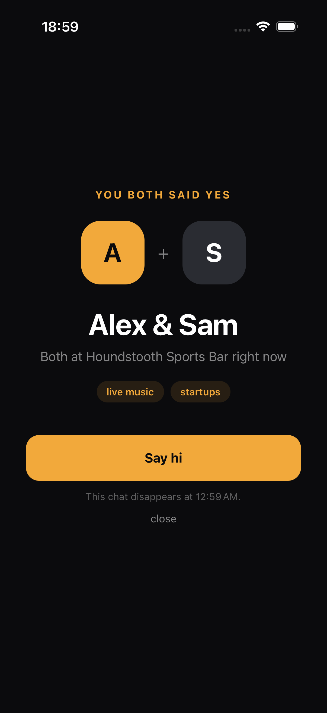
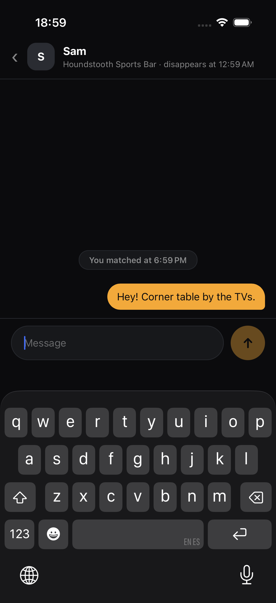
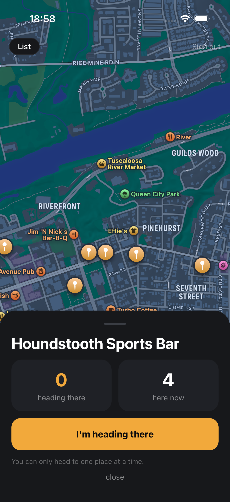
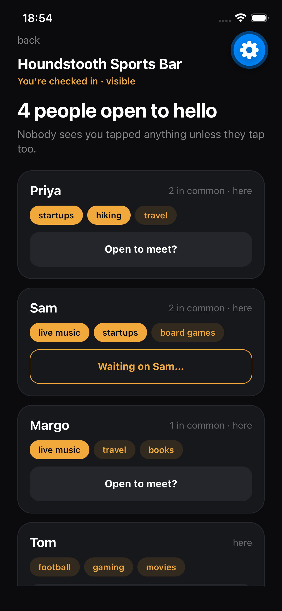
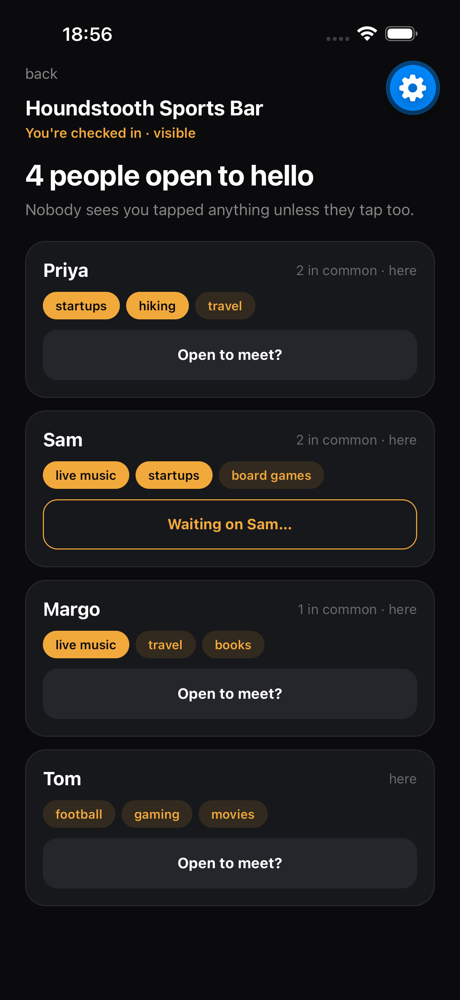
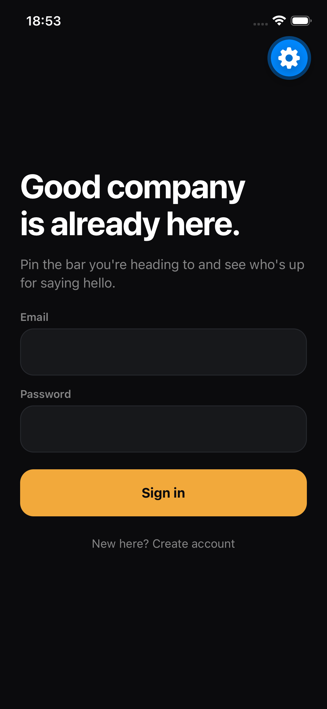
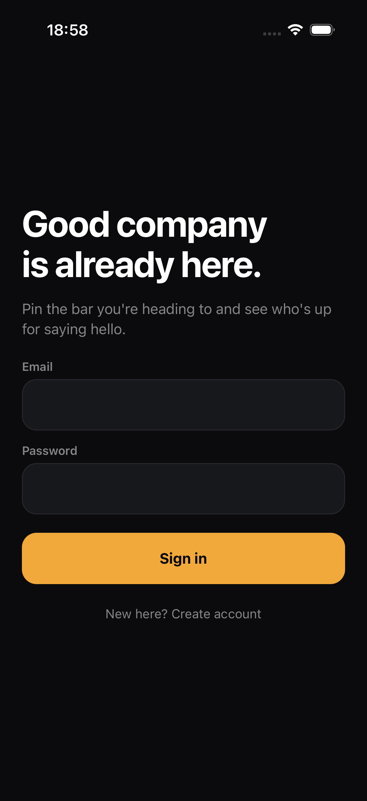
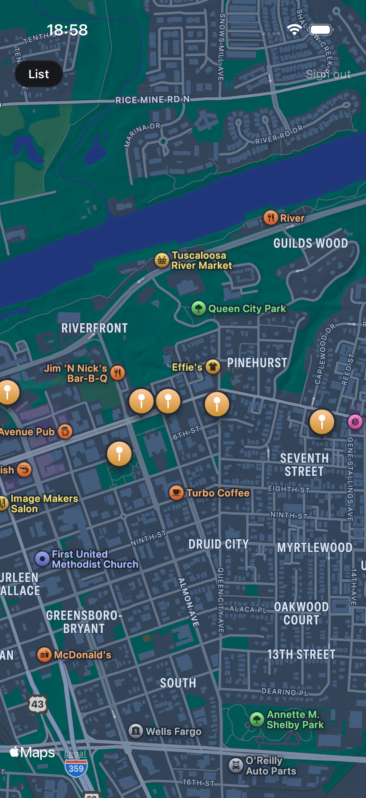

Real-time, venue-level social presence with double opt-in meetups
CS 415/515 Software Engineering — Project Milestone 2 (Test It)
| Team | Arda Alici (aalici@crimson.ua.edu) · Margulan Baizhakyp (mbaizhakyp@crimson.ua.edu) · Karthik Gaur (kgaur@crimson.ua.edu) |
| Repository | github.com/Arcce9/BeerChat |
| Git tag / release | milestone-2 · release v0.2.0 (previous: milestone-1 / v0.1.0) |
| Pull requests | #1 features + tests · #2 security · #3 E2E, CI, docs |
| Submitted | November 2026 |
Repository: https://github.com/Arcce9/BeerChat, tag milestone-2. BeerChat is a mobile app (React Native / Expo) on a hosted Supabase backend; it is run locally in the iOS Simulator (§5) — there is no separate public URL until deployment in Milestone 3. The hosted backend the app talks to is live.
The Milestone 1 core loop still works end to end — sign up → profile → pin a venue → check in → discover → mutual "open to meet" → chat — and is now covered by automated tests at four levels, hardened against three real vulnerabilities, and expanded with two backlog features.
| Item | What the user gets | How it is built |
|---|---|---|
| BC-08 Interest-ranked people list | People at your venue are ordered by how many interests you share ("2 in common"); shared interests are highlighted. | Pure ranking function (rankBySharedInterests: shared count → already-here before heading-over → name), unit-tested. |
| BC-10 Ephemeral chat | Every match and its chat disappear 6 hours after matching; the time is shown ("disappears at 12:47 AM"). | matches.expires_at; RLS hides expired matches/messages instantly; a pg_cron job purges them every 15 min; a client timer closes an open chat at expiry. |
| SEC-1…3 Security hardening | Only people at the same venue can see who is there (others see anonymous counts); requests only between visible people at the venue; server-side input limits. | Migration …000009: RLS policies, venue_counts() aggregate RPC, check constraints (§4). |
| Quality fixes | "List"/"Sign out" no longer hidden under the iOS status bar; no profile carry-over when switching accounts; profile setup enforces the specified 3–5 interests. | Found by the E2E run and by ESLint respectively (§3.3). |
| Demo & tooling | One-device demo with a populated venue; CI on every PR. | npm run seed:demo; GitHub Actions. |
Scope note (agile change, small magnitude): the Socket.io presence server (BC-09) and the OpenAI-embedding upgrade of ranking move to Milestone 3 — both are deployed services, which is that milestone's theme; BC-08 ships now with exact shared-interest ranking.
What the proposal's milestone plan ("Milestone 2: Socket.io integration, AI interest ranking, security controls, test suite") and the Milestone 1 report ("Next (M2)", known limitations) committed to, and where each item stands:
| Commitment | Source | Status at Milestone 2 |
|---|---|---|
| Test suite | Proposal M2 · M1 "Next" | Done — unit, component, integration, E2E (§3) |
| Security controls | Proposal M2 | Done — SEC-1…3 (§4) |
| Time-based chat expiry (BC-10) | M1 "Next" · M1 known limitations | Done — 6 h expiry |
| CI | M1 "Next" (proposal: M3) | Done early — GitHub Actions on every PR |
| Interest-ranked list (BC-08) using OpenAI embeddings + pgvector | Proposal M2 · M1 §5.1, "Next" | Partly — ranking ships using exact shared-interest overlap; embedding similarity (so "hiking" and "climbing" count as related) is not yet built |
| Socket.io presence service (BC-09, T-05) | Proposal M2 · M1 §5.1 and ADR-0001 | Not done — presence still runs on Supabase Realtime (works, verified live on two devices); moved to M3 with the other deployed services |
| Geofenced check-in | M1 known limitations | Not done — check-in is still a manual "I'm here" button; moved to M3 |
| Milestone 1 workflow keeps working | M2 instructions | Verified — the integration suite and E2E flows exercise the full M1 loop on the M2 build |
pins/profiles are now readable only by viewers checked in and visible at the same venue; venue counts come from the new venue_counts() RPC; meet_requests inserts require the requester to be checked in and visible at the venue and the target to be visible there; matches/messages readable only until expires_at. Recorded as ADR-0003 (docs/adr/0003-venue-scoped-visibility.md).MATCH gains expires_at; PROFILE gains length/count constraints. Entities and relationships are otherwise unchanged.lib/logic.ts (pure, unit-tested logic used by the screens); the boundary rule "only MapHome owns realtime subscriptions and mutation state" still holds.docs/QA-PLAN.md §4).



docs/QA-PLAN.md)| Level | Tool | Scope | Result |
|---|---|---|---|
| Static | TypeScript strict, ESLint | whole app | 0 type errors, 0 lint errors |
| Unit | Jest | logic.ts: ranking, expiry, validation, pin state machine (32 tests) | pass |
| Component | Jest + React Native Testing Library (Supabase mocked) | MapHome, PeopleHere, MatchScreen, ChatScreen (22 tests) | pass |
| Integration | Jest in Node against the live Supabase project, 3 real accounts | auth, RLS privacy rules, match/unmatch triggers, realtime delivery, expiry, security (23 tests) | 23 / 23 pass |
| End-to-end UI | Maestro on iOS Simulator | full journey through the real UI (2 flows) | pass on 3 screen sizes |
Integration tests for the main user flows (app/__tests__/integration/flows.test.ts) exercise the real system, not mocks: wrong password rejected; signed-out clients see nothing; a visible person appears to someone at the same venue and disappears when hidden; a one-sided request is invisible to its target; the return request creates exactly one match visible to both and to no outsider; clients cannot create matches directly; the match is set to expire 6 h after creation; a message is delivered to the other participant over Realtime; a message cannot be sent under someone else's name; outsiders cannot read the chat; withdrawal dissolves the match and deletes the chat.
| File | Statements | Branches | Functions | Lines |
|---|---|---|---|---|
lib/logic.ts | 100 % | 94.3 % | 100 % | 100 % |
MatchScreen.tsx | 100 % | 100 % | 100 % | 100 % |
ChatScreen.tsx | 93.1 % | 83.3 % | 100 % | 92.3 % |
PeopleHere.tsx | 82.1 % | 73.5 % | 92.9 % | 83.3 % |
MapHome.tsx | 76.6 % | 71.0 % | 70.8 % | 79.1 % |
| All files | 83.7 % | 77.9 % | 83.0 % | 84.9 % |
docs/evidence/coverage/index.html (regenerate with npm run test:coverage); CI also uploads it as an artifact on every run.docs/BUGLOG.md / commit history):
react-hooks/set-state-in-effect → a previous account's profile could carry over after switching accounts → profile state keyed by user id.returnKeyType="next" planned).main and on demand.All Milestone 2 work went through three stacked pull requests, each with a description, test notes, reviewer-focus notes and the QA checklist, with both teammates requested as reviewers. A PR merges into main only after a teammate's approval, and milestone-2 is tagged on the merged result, so each PR's review history is the review record:
| PR | Scope | Reviewers |
|---|---|---|
| #1 | BC-08, BC-10, logic extraction, unit/component tests, lint fix | Arda Alici (@Arcce9), Karthik Gaur (@Karthikgaur8) |
| #2 | SEC-1…3 + integration suite (test-first: failing tests committed before the fix) | Arda Alici, Karthik Gaur |
| #3 | E2E flows, status-bar fix, CI, QA/security/contributing docs | Arda Alici, Karthik Gaur |
Branching and commit conventions (docs/CONTRIBUTING.md): short-lived feature/, fix/, security/, docs/ branches off an always-runnable main; merge only via reviewed PR with green CI; Conventional Commits (feat:, fix(security):, test:, ci:…) referencing backlog/security ids; AI-assisted commits carry a Co-Authored-By trailer naming the model. Changelog and releases: CHANGELOG.md; tagged releases v0.1.0 (Milestone 1) and v0.2.0 (Milestone 2).
The Maestro flow 01-signin-checkin-discover was run unchanged on the smallest and largest current iPhones and on the iPhone 17; the full journey (flows 01 + 02) on the iPhone 17. Android was not run this milestone (team decision); the app uses only cross-platform React Native components.



The phone talks to the database directly with a publishable key that every copy of the app contains, so the database is the trust boundary: any rule that exists only in the UI is not a control. Full STRIDE table: docs/SECURITY.md.
| Surface | Threat | Before M2 | Control |
|---|---|---|---|
| pins / profiles reads | enumerate who is visible at every venue (real-time whereabouts) | vulnerable | SEC-1: same-venue RLS; counts via aggregate RPC |
| meet_requests insert | request arbitrary users from anywhere, incl. hidden people | vulnerable | SEC-2: RLS WITH CHECK on presence + visibility |
| profiles update | store huge names/interest lists shown to others | vulnerable | SEC-3: DB check constraints |
| meet_requests reads | learn who said yes to you | mitigated (M1) | requester-only RLS |
| matches / messages | forge matches, spoof sender, read others' chats, linger | mitigated | trigger-only matches; sender = self; participant RLS; 6 h expiry |
| Category | Finding |
|---|---|
| A01 Broken Access Control | Two real issues (SEC-1, SEC-2) — fixed. RLS on every table; access rules asserted by integration tests. Hiding chats at expiry and the purge job need time to pass, so no automated test covers them yet. |
| A02 Cryptographic Failures | Supabase Auth: bcrypt, TLS, JWT. No custom crypto. |
| A03 Injection | PostgREST parameterises queries; no string-built SQL; DB functions pin search_path = ''. |
| A04 Insecure Design | Limits existed only in the UI (SEC-3) — moved into DB constraints. |
| A05 Security Misconfiguration | RLS everywhere; purge function's execute revoked from clients; email confirmation off for the demo (documented). |
| A06 Vulnerable Components | npm audit reviewed; Expo SDK patches applied; CI installs from the lockfile. |
| A07 Identification & Auth | Supabase sessions; profile-carry-over bug on account switch fixed. |
| A08 Integrity · A09 Logging · A10 SSRF | Lockfile + versioned migrations · Supabase request logs (alerting in M3) · N/A (no server-side fetches). |
Test-first: the security tests (asserting the secure behaviour) were committed and run before the fix (9d34f1c, log docs/evidence/security-BEFORE.txt), then the migration was applied and the same suite re-run (a46267d, security-AFTER.txt).
| Security test | Before | After |
|---|---|---|
| SEC-1 outsider cannot list who is checked in at a venue | ✕ received 2 user ids | ✓ |
| SEC-1 outsider cannot read profiles of people at a venue | ✕ | ✓ |
| SEC-1 someone at a different venue cannot list this one | ✕ | ✓ |
| SEC-1 anyone signed in still gets anonymous counts | ✕ RPC did not exist | ✓ |
| SEC-2 outsider cannot send a meet request | ✕ accepted | ✓ |
| SEC-2 request cannot target a hidden person | ✕ accepted | ✓ |
| SEC-3 rejects a 5,000-character display name | ✕ accepted | ✓ |
| SEC-3 rejects more than 5 interests | ✕ accepted | ✓ |
| Whole integration suite | 8 failed · 15 passed | 23 passed |
How the TA observes the control: (1) npm run test:integration — SEC-1…3 pass; (2) in the app, open a venue before checking in — counts are visible, identities are not; after checking in visibly at that venue, the people list appears.
Unchanged prerequisites: macOS with Xcode 16+ (iOS Simulator runtime), Node.js 20+. Full instructions: README.md; click-by-click script with expected results: docs/VERIFICATION.md.
git clone git@github.com:Arcce9/BeerChat.git && cd BeerChat && git checkout milestone-2 cd app && npm install # dependencies (Expo SDK 57, Jest, Testing Library) npm run seed:demo # sample data: Sam, Priya, Tom checked in at Houndstooth Sports Bar npx expo start # press i → iOS Simulator (Expo Go installs automatically) npm run typecheck && npx expo lint npm test # 54 unit + component tests npm run test:coverage # + coverage report and enforced thresholds npm run test:integration # 23 tests against the live backend npm run e2e # optional: Maestro UI flows (brew install maestro)
Environment: app/.env (Supabase URL + publishable key, safe to ship by design — all data protected by RLS) and app/.env.test (integration-test account password) are committed, so no configuration is needed; app/.env.example documents the variables. Migrations: ten ordered files in supabase/migrations/, already applied to the hosted database (supabase db push for a fresh project); M2 adds …000008_chat_expiry, …000009_security_hardening and …000010_viewer_must_be_visible. Demo accounts: ta.demo1@beerchat.dev / BeerChat-M1-demo1 (Alex — sign in as this one); demo2–4 (Sam, Priya, Tom) follow the same pattern.
| # | TA checks | Expected |
|---|---|---|
| 1 | Milestone 1 workflow (two simulators, two demo accounts): check in → see each other live → double opt-in → chat → withdraw | as in M1; still works |
| 2 | As Alex, open Houndstooth before checking in | anonymous counts, no identities (security control) |
| 3 | Check in, go visible, "See who's open to hello" | Priya and Sam ("2 in common") above Tom (BC-08) |
| 4 | node scripts/seed-demo.mjs sam-says-yes, tap "Open to meet?" on Sam, "Say hi" | match + chat show "disappears at …", 6 h ahead (BC-10) |
| 5 | Run the automated test commands above | all pass |
Free-tier note: the hosted Supabase project pauses after ~1 week idle; if the app shows network errors, allow 2–3 minutes for it to wake, or contact the team.
Recorded by the automated E2E flows (app/e2e/) on the iPhone 17 — the same steps a live demo follows:


iOS-verified only (Android not run this milestone) · check-in is manual, not geofenced, so a script can still move a visible pin between venues to list who is there (SEC-1 blocks silent viewing, not this) · presence uses Supabase Realtime rather than the planned Socket.io service · BC-08 ranks by exact shared interests, not embeddings · email confirmation disabled for the demo · free-tier database may need 2–3 minutes to wake.
| Member | Milestone 2 contribution |
|---|---|
| Margulan Baizhakyp | Built the Milestone 2 work using a disclosed AI-assisted workflow (Claude Code; commits carry a Co-Authored-By trailer): BC-08 ranking, BC-10 chat expiry, the unit/component/integration/E2E test suites and CI, the SEC-1…3 security fixes with before/after evidence, the QA plan, security, contributing and changelog documents, and this report. |
| Arda Alici | Worked with Margulan Baizhakyp on the E2E flows, CI, documentation and report, and merged PRs #1–3 into main. With AI assistance (Claude Code), reviewed the Milestone 2 code, found that SEC-1 could be bypassed with a hidden pin, and wrote the fix (migration …000010) with regression tests, added a CI timeout and forced exit for the integration tests, added five more access-rule tests, and completed the Milestone 2 bug log. |
| Karthik Gaur | [To be written by Karthik: one or two sentences on his own Milestone 2 contribution.] |